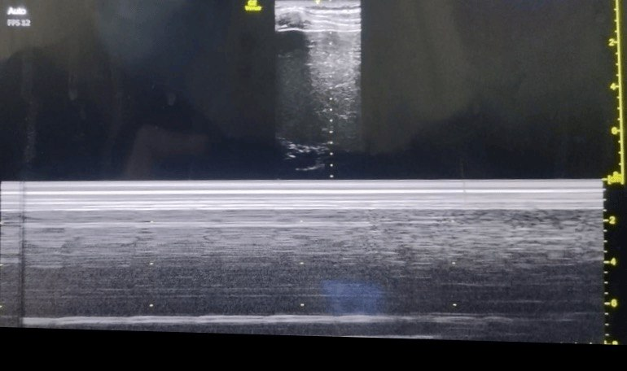
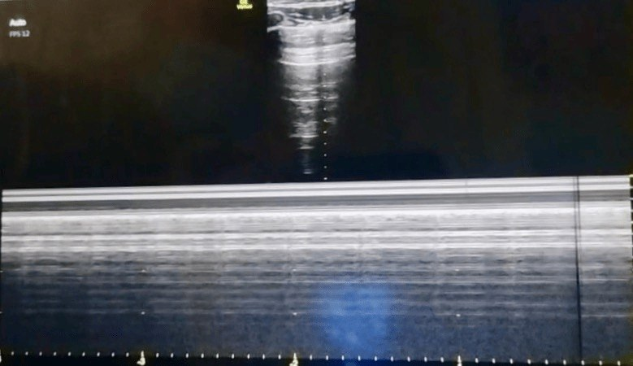

Case 003 · Thoracic · Paediatric-Adolescent · Point-of-Care Ultrasound
Isolation We Could See
A 15-year-old with metastatic osteosarcoma underwent right VATS metastasectomy. This case is about why we used four separate modalities — including lung ultrasound — to confirm DLT position. In thoracic anaesthesia, redundancy is standard of care, not overcaution.
↓
Scroll to see ultrasound clips
The Patient at a Glance
Clinical snapshot
Age / Sex15 years / Male
DiagnosisMetastatic osteosarcoma
Prior surgeryLeft proximal humerus wide excision, shoulder arthrodesis with plate, free fibula flap
Current imagingCalcific nodules — pleural base of right upper lobe, posterior basal segment of right middle lobe, left costophrenic angle calcification
Height / Weight171 cm / 64 kg
Functional statusNYHA Class I
Planned procedureRight pulmonary metastasectomy via VATS — requires right lung isolation
Airway plan39 Fr left-sided double-lumen endotracheal tube (DLT)
The calcific pleural nodules meant the right pleural surface was not pristine. A baseline lung ultrasound was necessary to document these findings before induction so they would not be mistaken for intraoperative complications.
The Choice of Isolation
For right-sided thoracic surgery, a left-sided DLT is the default. The right main bronchus is short with an early upper-lobe take-off, leaving little margin for error. A right-sided DLT requires precise slot alignment with the right upper lobe orifice — difficult in smaller airways.
The patient was 171 cm, 64 kg. Adult algorithms place him at 37–39 Fr. We selected a 39 Fr left-sided DLT. A 37 Fr might seal poorly in a near-adult trachea; the 39 Fr bronchial limb would still seat in a left main bronchus of ~10–12 mm.
Sizing in near-adult patients
In adolescents, DLT size is best guided by tracheal width on CT (>14 mm → 39 Fr; 12–14 mm → 37 Fr). If CT is unavailable, prepare both sizes and assess tracheal calibre after induction. Bronchial blockers are an alternative when sizing is uncertain.
The Four-Witness Confirmation Cascade
No single method of DLT confirmation is infallible. The 2022 ESAIC/ESTS guidelines, ASA practice parameters, and AIDAA recommendations all converge on multimodal confirmation. We structured ours as a cascade — each layer adding specificity, with lung ultrasound as the final witness.
I
Bilateral Chest Auscultation
Symmetrical breath sounds on the left; markedly diminished on the right with clamping. Sounds returned on unclamping. Limitation: subjectivity; cannot distinguish endobronchial migration from mainstem occlusion.
II
Direct Fibreoptic Bronchoscopy — Gold Standard
Carina visible distal to the tracheal cuff; bronchial cuff seated in the left main bronchus; right main bronchus patent; no airflow on clamping. Anatomical certainty, but a static snapshot — it cannot confirm dynamic isolation.
III
Visual Assessment of Chest Wall Excursion
In left lateral decubitus, the left hemithorax moved symmetrically with each breath; the right remained static after clamping. Limitation: subtle in compliant chest walls; cannot detect proximal leak.
IV
Lung Ultrasound — Dynamic Witness
Baseline LUS before induction documented sliding bilaterally. After DLT and OLV: clear sliding on the left; minimal-to-absent on the right, consistent with effective collapse. Physiological proof.
Ultrasound Documentation
All clips acquired with a linear high-frequency probe (6–13 MHz), longitudinal plane, marker cephalad. Gain and depth optimised for pleural line visualisation. Videos shown at original speed without enhancement.
🫁 Clip 3 · Left Lung During One-Lung Ventilation
Pleural sliding present. Longitudinal B-mode scan demonstrating normal pleural sliding synchronous with ventilation during one-lung ventilation.
🫁 Clip 4 · Right Lung During One-Lung Ventilation
Pleural sliding absent. Longitudinal B-mode scan demonstrating absence of pleural sliding after successful right lung isolation.

LEFT LUNG — OLV
M-MODE
📈 Figure 1 · Left Lung M-mode
Classic seashore sign, confirming ventilation.

RIGHT LUNG — OLV
M-MODE
📈 Figure 2 · Right Lung M-mode
Barcode (stratosphere) sign, consistent with absence of pleural sliding during lung isolation.
Why Lung Ultrasound Was Added
LUS has become an adjunct standard in thoracic anaesthesia. The physics is simple: pleural sliding requires apposition of visceral and parietal pleura. In a collapsed lung, the visceral pleura separates; the pleural line becomes static.
In this patient, LUS served three functions:
- Baseline documentation: Recorded sliding bilaterally and documented calcific nodules so they would not be mistaken for pneumothorax or consolidation.
- Dynamic confirmation: Absent sliding on the right and preserved sliding on the left proved OLV was effective — not merely that the tube was anatomically positioned.
- Safety net: LUS can be repeated after repositioning without re-inserting the bronchoscope, catching DLT migration early.
LUS does not replace bronchoscopy. It answers a different question: not "is the tube in the right place?" but "is the lung actually isolated?"
— Adapted from Acosta et al., 2019
When DLTs Go Wrong: A Complications Framework
DLT complications are predictable risks organised by mechanism: malposition-related, ventilation-related, and positioning-related.
Hypoxaemia
Most common OLV complication. From V/Q mismatch or shunt. Management: increase FiO₂, CPAP 5–10 cmH₂O to non-dependent lung, or intermittent reinflation.
Barotrauma & Volutrauma
One lung receives the entire tidal volume. Keep plateau pressure <25–30 cmH₂O. Higher pressures risk pneumothorax, especially if the DLT migrates proximally.
Soiling / Aspiration
Incomplete isolation allows secretions from the operative side to spill into the ventilated lung. Prevented by precise positioning and pre-operative suctioning.
Airway Injury
Bulky tubes risk mucosal ischaemia or tracheobronchial rupture if the cuff is overinflated or positioned too distally. Keep cuff pressure <30 cmH₂O.
Wrong-Sided Placement
A left-sided DLT in the right main bronchus occludes the contralateral lung and ventilates only the operative side — immediate hypoxaemia. Bronchoscopy is non-negotiable.
Proximal Migration
The bronchial cuff slips back into the trachea, herniating over the carina and occluding both bronchi. Sudden inability to ventilate with rising pressures. Requires immediate repositioning.
Guidelines, Protocols, and the Evidence Base
The approach aligned with the following evidence base:
Key guidelines
- ASA Practice Parameters (2020): Bronchoscopy is gold standard; auscultation and clinical assessment are essential adjuncts. No single modality is sufficient.
- ESAIC/ESTS (2022): Pre-operative airway assessment, appropriate sizing, bronchoscopy after insertion and after repositioning. LUS is an emerging adjunct for confirming collapse.
- AIDAA (2022): Tiered approach for resource-limited settings — auscultation, capnography, then bronchoscopy. LUS recognised as useful where trained operators are available.
- STS / EACTS: Lung-protective OLV: tidal volumes 4–6 mL/kg PBW, plateau pressure <25 cmH₂O, PEEP titrated to the dependent lung.
LUS evidence
- Acosta et al. (2019): Absent pleural sliding on the non-ventilated side had 100% sensitivity and 93% specificity for confirming lung isolation (CT reference).
- Bouhemad et al. (2015): Established ultrasound patterns for collapse — transition from sliding to static pleural line with tissue-like patterns.
- Song et al. (2020): LUS after lateral positioning detected DLT migration in 12% of cases correctly positioned supine.
Stepwise DLT confirmation protocol
Step 1 — Pre-operative
Review CT for tracheal width and bronchial anatomy. Perform baseline LUS bilaterally.
Step 2 — Insertion
Place left-sided DLT. Inflate tracheal cuff. Confirm bilateral breath sounds. Reposition if asymmetrical.
Step 3 — Bronchoscopy (supine)
Visualise carina, cuff position, and right main bronchus patency. Inflate bronchial cuff to seal at <30 cmH₂O.
Step 4 — LUS confirmation (supine)
Clamp right lumen. Confirm absent sliding on right, preserved on left. Persistent right sliding suggests incomplete isolation.
Step 5 — Repositioning & re-check
After lateral decubitus, repeat auscultation and LUS. Repeat bronchoscopy if any ambiguity.
Step 6 — Intraoperative vigilance
Monitor SpO₂, EtCO₂, pressures, and compliance. Sudden change triggers reassessment: tube depth → bronchoscopy → LUS → ventilator settings.
What I Keep Coming Back To
In thoracic anaesthesia, certainty is built in layers. The bronchoscope gave us anatomy, but the ultrasound gave us physiology — the actual movement of the pleura proving one lung was ventilated and the other was still. The baseline scan documented calcific nodules before induction so they were never mistaken for complications later. Re-checking after lateral positioning caught what a single static check would have missed. The lesson is simple: use every tool available, and document what you see before you need to interpret what has changed.
References
- Acosta CM, Tusman G, Niklison L, et al. Accuracy of transthoracic lung ultrasound for confirming correct location of double-lumen tube: a prospective diagnostic trial. J Cardiothorac Vasc Anesth. 2019;33(3):692–700.
- Bouhemad B, Mongodi S, Via G, Rouquette I. Ultrasound for "lung monitoring" of mechanically ventilated patients. Intensive Care Med. 2015;41(3):444–445.
- Song IK, Kim HJ, Kim EH, et al. Utility of transthoracic ultrasound to assess lung collapse after application of one-lung ventilation in children. Paediatr Anaesth. 2020;30(4):472–480.
- Campos JH. Update on tracheobronchial anatomy and flexible fiberoptic bronchoscopy in thoracic anesthesia. Curr Opin Anaesthesiol. 2020;33(1):6–13.
- Lohser J, Slinger P. Lung isolation and one-lung ventilation. In: Miller's Anesthesia. 9th ed. Elsevier; 2020: Chapter 54.
- Senturk M, Orhan ME, Ozcan PE. Thoracic anaesthesia and lung isolation: ESAIC/ESTS joint guidelines. Eur J Anaesthesiol. 2022;39(8):599–621.
- Myles PS, Ball D. Current state of one-lung ventilation. Anesthesiol Clin. 2020;38(4):735–751.
- AIDAA Guidelines Committee. Recommendations for airway management in thoracic surgery. Indian J Anaesth. 2022;66(Suppl 2):S112–S120.
- Clayton-Smith A, Bennett J, Alston RP, et al. A comparison of the efficacy and safety of supraglottic airway devices and double-lumen tubes for lung isolation: a systematic review and meta-analysis. Anaesthesia. 2021;76(9):1251–1262.
- El-Boghdadly K, Onwochei DN, Cuddihy J, Ahmad I. A prospective cohort study of awake fibreoptic bronchial intubation for thoracic surgery. Anaesthesia. 2020;75(6):769–775.
July 2026
Thoracic · Airway · Ultrasound · VATS
Ode to the OR is a personal project dedicated to education and reflection. Any patient-related content has been fully de-identified and may be modified to protect confidentiality in accordance with HIPAA principles, the Digital Personal Data Protection (DPDP) Act, 2023 (India), and the ethical mandates of the National Medical Commission (NMC) of India. AI tools may assist with language refinement and presentation, but all content is reviewed, curated, and published by the author. The views expressed are solely my own and do not represent any institution, hospital, employer, or training program. Nothing on this site should be considered medical advice or a substitute for professional clinical judgment.